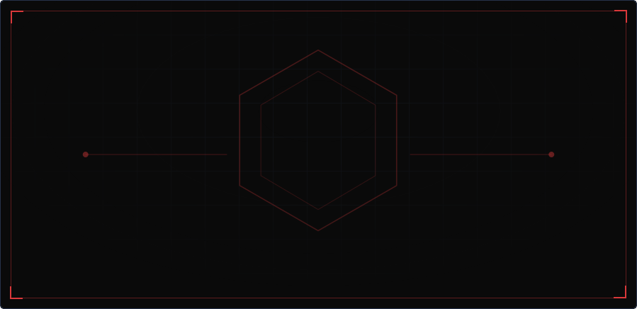

N.O.L.A.N.™
Connected intelligence for critical operations
N.O.L.A.N.™ (Next-Generation Operations Leader for All-Hazard Networks) is our proprietary virtual AI system, designed to bring mission information and autonomous assets together under a shared operational picture.
It supports coordination across the response while keeping decisions in the hands of incident commanders.
Discover N.O.L.A.N.™